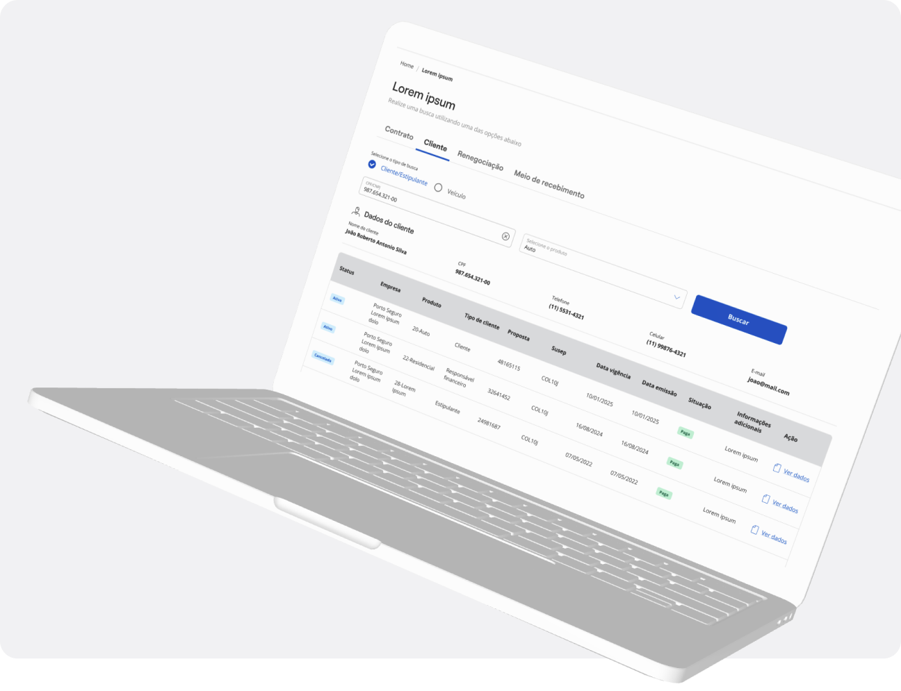
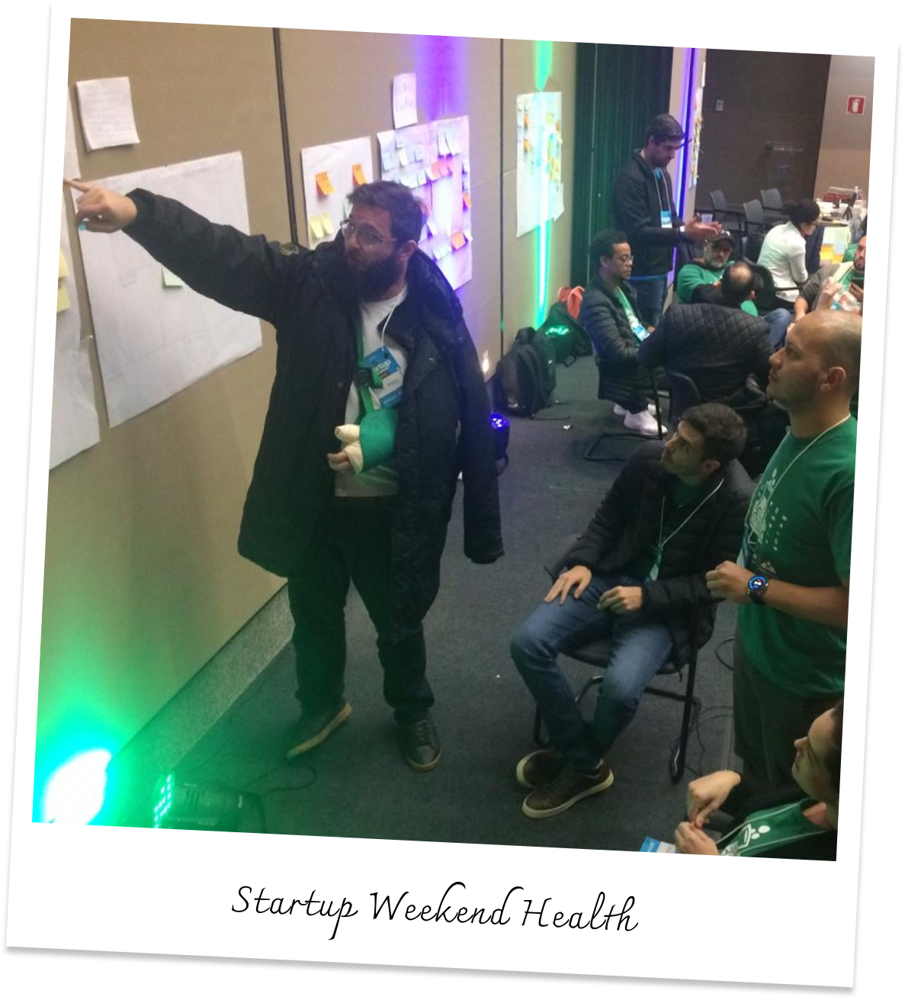
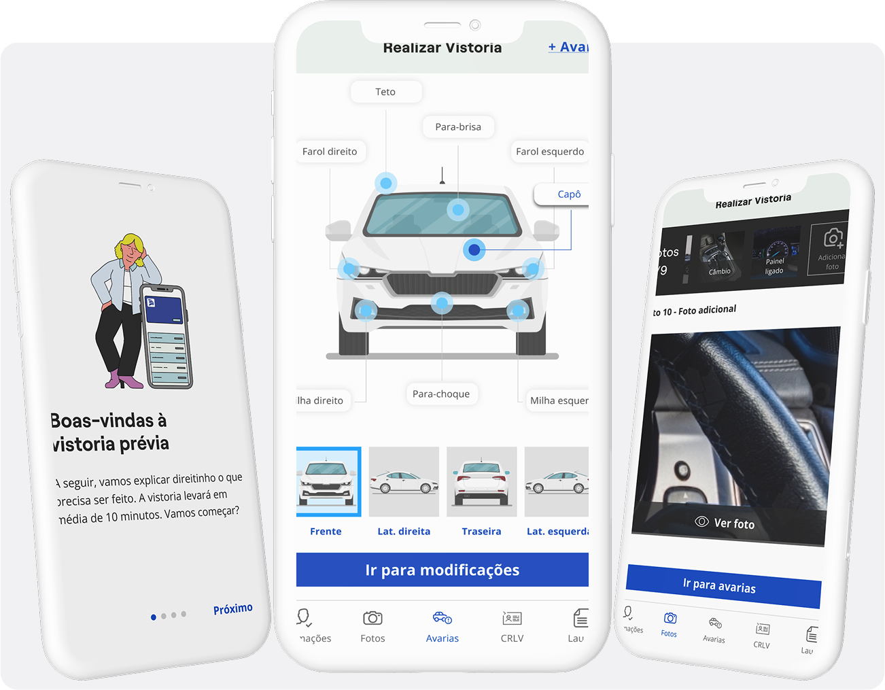
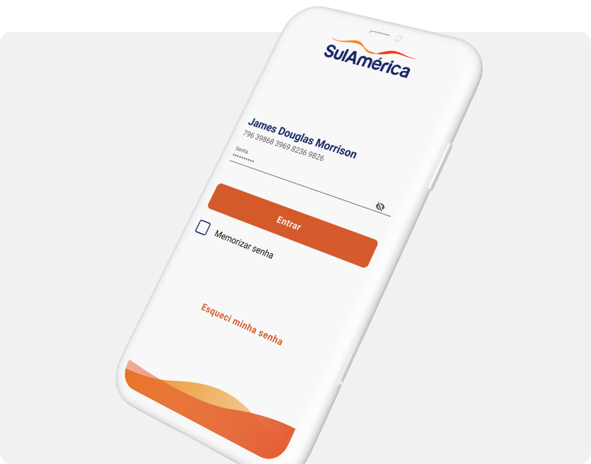
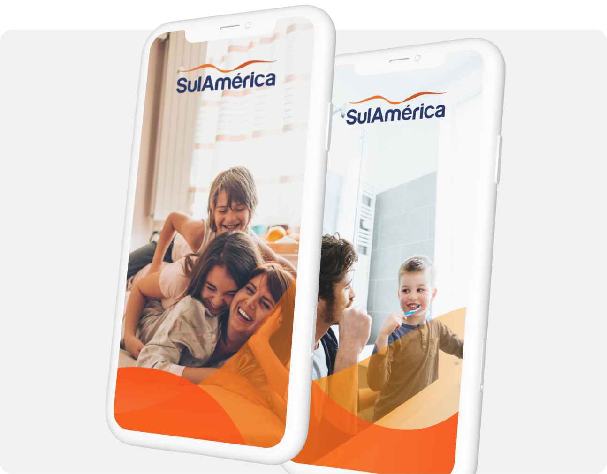

PLATAFORMA
Front Financeiro
Redesign da operação financeira de atendimento ao cliente, consolidando cinco plataformas em uma única experiência.
60%
de redução do TMO
Ver case completo →
Há quase 10 anos transformo operações complexas em experiências simples, centradas em pessoas.
SOBRE MIM
Minha trajetória no design começou no gráfico, passou pelo digital e pela direção de arte, até eu encontrar no UX/UI a área com a qual realmente me conectei. Foi ali que percebi que meu interesse ia muito além do visual: eu gostava de entender pessoas, resolver problemas e criar experiências que fizessem sentido no dia a dia.
Design não é apenas interface, é a capacidade de transformarmos decisões em experiências que fazem sentido para as pessoas.

TRAJETÓRIA
~10
anos de experiência
30+
projetos entregues
10
produtos lançados
5
plataformas modernizadas
ESPECIALIDADES
PROJETOS

PLATAFORMA
Redesign da operação financeira de atendimento ao cliente, consolidando cinco plataformas em uma única experiência.
ECOSSISTEMA DIGITAL
Transformação completa da operação de vistoria veicular, do agendamento ao laudo final.


APP MOBILE
Redesenho da jornada de acesso do app saúde, simplificando o login e o acesso a mais de uma carteirinha.
Ver case completo →APP MOBILE
Três anos no squad core dos apps de Saúde e Odonto realizando melhorias de jornada, novos serviços e iniciativas de produto.
Ver case completo →
Se você tem um desafio nas mãos, eu adoraria ouvir sobre ele.